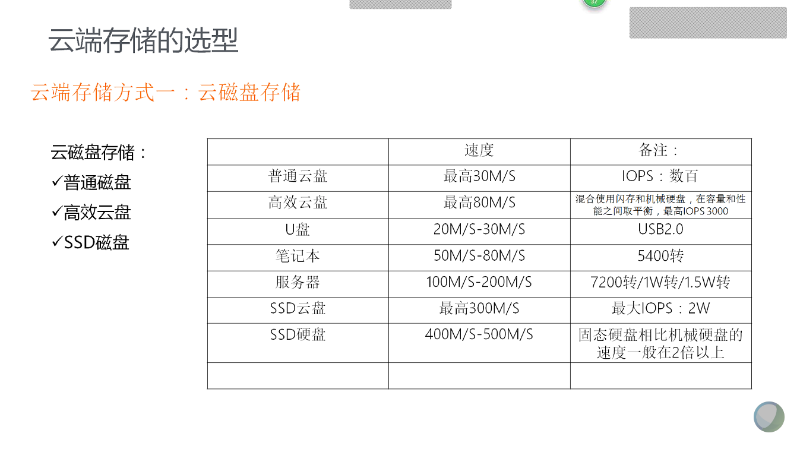
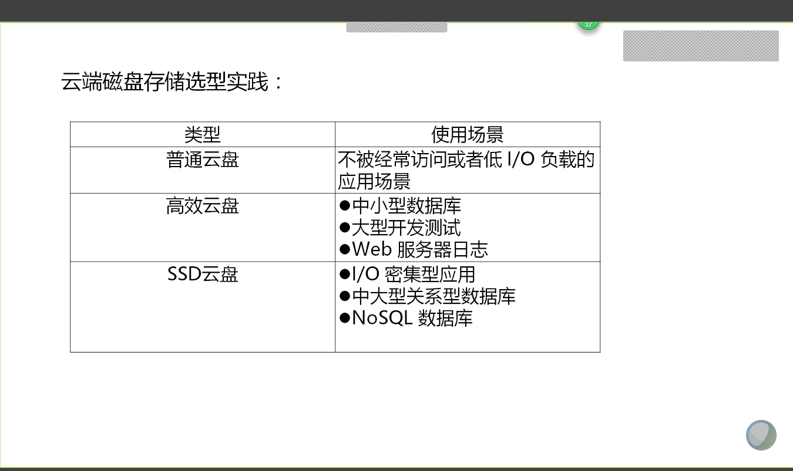

资源存储 运维环境安装配置所需的源码、安装包、插件等统一存放至运维oss中。
相应的脚本、程序、代码统一存放至gitlab中，脚本wget oss中的源码完成安装。
脚本库、软件安装规范 相应环境安装配置，统一采用gitlab中脚本完成，包含系统初始化、系统配置等。
数据库安装部署脚本需求，对接到DBA组，DBA组需要至多一个工作日内提供安装脚本（特殊复杂软件脚本除外），上传至gitlab中。
MySQL安装部署 如何为MySQL选择合适的云服务器 CPU选型 应用是否是CPU密集型 ？ 若是CPU密集型应用，我们需要的是加快SQL语句的处理速度，显然我们需要的更好的 CPU而不是更多的 CPU。另外，截止于2018年止，MYSQL不支持多CPU对同一SQL并发处理，也就是说，不管CPU多强或多弱，我们也只能用一个CPU核心来处理这一条SQL
多个CPU对提高一个SQL的处理效率是没有帮助的
系统的并发量是多少 ？ 为了提高系统的并发处理量（吞吐量），我们就需要CPU越多越好。
所使用的MYSQL是什么版本 ？ 为了更好的发挥多核CPU的效果，请使用最新的MYSQL版本，至少也要升级到5.6或以上，我们就是可以放心的使用16或者32核的CPU
选择32位还是64位的CPU ？ 选择 64 位CPU，这样才可以安装 64 位操作系统，有了 64 位操作系统才能利用好更大的内存。
64位使用32位服务器版本的情况 ？ 有些云服务器或者一些公司服务器会出现64位却装着32位系统版本的情况…请重装…
内存选型
磁盘的配置和选择 

MySQL推荐配置文件 首先根据《调研表格》填写信息，然后登陆到 自动生成配置文件连接地址：http://imysql.cn/my_cnf_generator 登陆后根据调研信息填写后，一键生成。
注意事项
个别建议可能需要根据实际情况作调整，请自行判断或联系我，本人不对这些建议结果负相应责任
本配置文件主要适用于MySQL 5.7/8.0版本
调研表格
No.
Q
默认值
客户填写
1
您的服务器物理内存(单位：GB)
8核
2
您的MySQL版本 (5.7 or 8.0)
5.7
3
您的服务器架构, x86 或 x86-64
x86-64
4
该服务器是跑MySQL专属的吗
是
5
MySQL安装文件路径
/data/mysql
6
MySQL数据文件路径
/data/mysql/data
7
MySQL监听端口
3306
8
MySQL SOCKET 文件位置
/data/mysql/mysql.sock
9
该实例预计有多少个数据表
512
10
该实例预计最大并发连接数
512
11
binlog保留多久(单位：天)
7
12
排序(ORDER BY)、分组(GROUP BY)之类的查询多吗
不多
13
MySQL异常宕机时怕丢数据不？
怕
主从复制参数大全 master所有参数 1 log-bin=mysql-bin 1、控制master的是否开启binlog记录功能； 2、二进制文件最好放在单独的目录下，这不但方便优化、更方便维护。 3、重新命名二进制日志很简单，只需要修改[mysqld]里的log_bin选项， 如下例子：要重新调整logbin的路径为“/home/mysql/binlog” [mysqld] log_bin=/home/mysql/binlog/binlog.log ll /home/mysql/binlog -rw-rw---- 1 mysql mysql 98 Mar 7 17:24 binlog.000001 -rw-rw---- 1 mysql mysql 33 Mar 7 17:24 binlog.index 需要注意：指定目录时候一定要以*.log 结尾，即不能仅仅指定到文件夹的级别，否则在重启mysql时会报错。 2. server-id=1 每个server服务的标识，在master/slave环境中，此变量一定要不一样 3. expire_logs_days=15 通过此来实现master自动删除binlog 4. innodb_flush_log_at_trx_commit=1 此参数表示在事务提交时，处理重做日志的方式；此变量有三个可选值0，1，2： 0：当事务提交时，并不将事务的重做日志写入日志文件，而是等待每秒刷新一次 1：当事务提交时，将重做日志缓存的内容同步写到磁盘日志文件，为了保证数据一致性，在replication环境中使用此值。 2：当事务提交时，将重做日志缓存的内容异步写到磁盘日志文件（写到文件系统缓存中） 建议必须设置innodb_flush_log_at_trx_commit=1 5.sync_binlog=1 1、此参数表示每写缓冲多少次就同步到磁盘； 2、sync_binlog=1表示同步写缓冲和磁盘二进制日志文件，不使用文件系统缓存 在使用innodb事务引擎时，在复制环境中，为了保证最大的可用性，都设置为“1”，但会对影响io的性能。 3、即使设置为“1”，也会有问题发生： 假如当二进制日志写入磁盘，但事务还没有commit，这个时候宕机， 当服务再次起来的恢复的时候，无法回滚以及记录到二进制日志的未提交的内容； 这个时候就会造成master和slave数据不一致 解决方案： 需要参数innodb_support_xa=1来保证。建议必须设置 6 .innodb_support_xa=1 此参数与XA事务有关，它保证了二进制日志和innodb数据文件的同步，保证复制环境中数据一致性。建议必须设置 7.binlog-do-db=skate_db 只记录指定数据库的更新到二进制日志中 8. binlog-do-table=skate_tab 只记录指定表的更新到二进制日志中 9. binlog-ignore-db=skate_db 忽略指定数据库的更新到二进制日志中 10.log_slave_updates=1 此参数控制slave数据库是否把从master接受到的log 并在本slave执行的内容记录到slave的二进制日志中 在级联复制环境中（包括双master环境），这个参数是必须的 11.binlog_format=statement|row|mixed 控制以什么格式记录二进制日志的内容，默认是mixed 12. max_binlog_size master的每个二进制日志文件的大小，默认1G 13.binlog_cache_size 1、所有未提交的事务都会被记录到一个缓存或临时文件中，待提交时，统一同步到二进制日志中， 2、此变量是基于session的，每个会话开启一个binlog_cache_size大小的缓存。 3、通过变量“Binlog_cache_disk_use”和“Binlog_cache_use”来设置binlog_cache_size的大小。 说明： Binlog_cache_disk_use： 使用临时文件写二进制日志的次数 Binlog_cache_use： 使用缓冲记写二进制的次数 14.auto_increment_increment=2 //增长的步长 auto_increment_offset=1 //起始位置 在双master环境下可以防止键值冲突 slave所用参数 1.server-id=2 和master的含义一样，服务标识 2.log-bin=mysql-bin 和master的含义一样，开启二进制 3.relay-log=relay-bin 中继日志文件的路径名称 4. relay-log-index=relay-bin 中继日志索引文件的路径名称 5. log_slave_updates=1 和master的含义一样，如上 6.read_only=1 1、使数据库只读，此参数在slave的复制环境和具有super权限的用户不起作用， 2、对于复制环境设置read_only=1非常有用，它可以保证slave只接受master的更新，而不接受client的更新。 3、客户端设置： mysq> set global read_only=1 7. skip_slave_start 使slave在mysql启动时不启动复制进程，mysql起来之后使用 start slave启动，建议必须 8.replicate-do-db 只复制指定db 9.replicate-do-table 只复制指定表 10. replicate-ingore-table 忽略指定表 11. replicate_wild_do_table=skatedb.% 模糊匹配复制指定db 12. auto_increment_increment=2 auto_increment_offset=1 和master含义一样，参考如上 13. log_slow_slave_statements 在slave上开启慢查询日志，在query的时间大于long_query_time时，记录在慢查询日志里 14. max_relay_log_size slave上的relay log 的大小，默认是1G 15.relay_log_info_file 中继日志状态信息文件的路径名称 16. relay_log_purge 当relay log 不被需要时就删除，默认是on SET GLOBAL relay_log_purge=1 17.replicate-rewrite-db=from_name->to_name 数据库的重定向，可以把分库汇总到主库便于统计分析
卸载MySQL冲突软件 MySQL的版本非常多，例如MySQL、Mariadb、Percona Server等，每个厂商又有很多不同的版本，版本之间不兼容问题可能会导致新装环境的失败，因此在安装之前请根据系统环境选择卸载。
若对已安装的软件熟悉，则根据实际清空进行卸载，例如通过包管理器进行安装的软件，可以使用卸载命令将其他MySQL数据库卸载，例如Redhat系列使用rpm\yum,Ubuntu选择apt 。
RedHat系列
Ubuntu系列
若为二进制安装且已清楚安装环境，需要卸载的软件包如何检测呢？
find / -name 'mysql*' 2> /dev/null > pre.file while read line; rm -rf $line ;done < pre.file
Oracle安装部署
Redis
Mongodb安装部署 MongoDB的安装包括单机环境的安装、副本集环境的安装配置以及分片集环境的安装配置，下面分别进行描述。